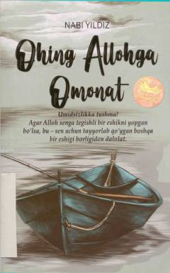

OAOg'ir sinovlar va tushkunlikka tushgan qalblar uchun sabr hamda umid baxsh etuvchi ta'sirli asar.
Ushbu kitob hayot sinovlari, tushkunlik va qiyinchiliklarga duch kelgan insonlarga ruhiy dalda berish, umidni so'ndirmasdan sabr qilishga chorlash maqsadida yozilgan. Muallif Nabi Yildiz o'quvchining ichki ovozi sifatida murojaat qilib, har bir dard va musibatning ortida ilohiy hikmat va mukofot borligini eslatadi. Asar qalbga huzur bag'ishlab, Allohga tavakkul qilish tuyg'usini kuchaytiradi.